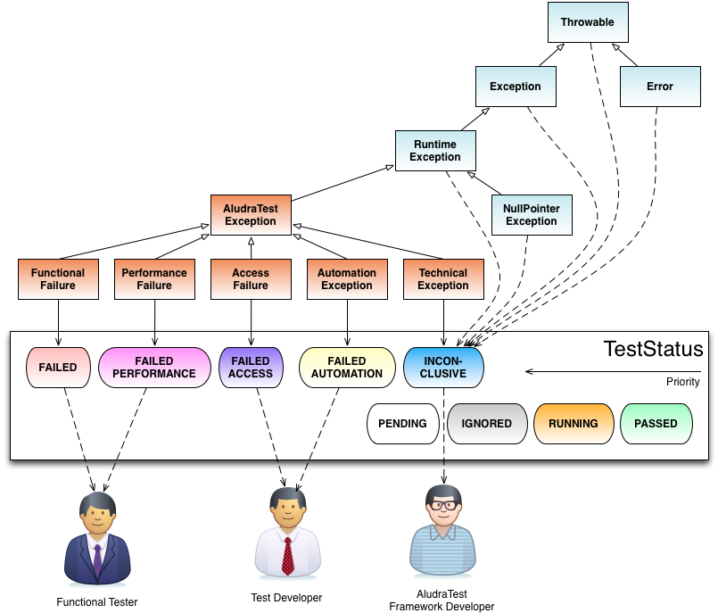

Understand the log
AludraTest's component Log4Testing generates customizable user-readable logs. The implementation includes a HTML and a XML generator.
If you like to extend Log4Testing, please refer to log4testing developer guide.
Colors in Log4Testing Protocol
- Pending
- A test is scheduled for execution but was not started yet
- Running
- A test is currently running
- Passed
- A test was executed and no errors occured
- Ignored
- A test was ignored. For different types of test objects, this is the result of different causes:
- For TestSuites and TestCases this signals that a test data set was marked to be ignored by the user, the test is executed, but the result code is not propagated to the suite.
- For a TestStep it signals that
- either a previous step was erroneous and therefore this TestStep was skipped.
- or a test step was erroneous but configured to be retried, ignoring an initial failure
- Failed
- A test failed due to an functional error e.g. incorrect value. This has to be examined by a Functional Tester.
- Failed Performance
- A test failed due an error which should be addressed a Functional Tester. Usually this indicates that the SUT is hanging or takes an intolerable timespan to respond to a user activity.
- Failed Access
- A test failed due to a failed system access which should be addressed by a Test Developer. Most likely a required system is offline or access configuration is wrong.
- Failed Automation
- A test failed due to an error which could be fixed a Test Developer. Mostly these are technical errors like a changed technical identifier.
- Inconclusive
- A test failed due to an error which has to be examined by an AludraTest Developer.

Configuration File Format
Log4Testing is configured from the contents of a file named log4testing.xml on the Classpath. It allows the user to configure the following settings:
- Setting system variables
- Plugging in report generators and other observer classes
- Configuring Velocity-template-based report file exporters
- Defining replace mechanism for Attachments. For example a website which calls of external scripts, which are not included in the saved html could be replaced with an regular expression.
As the file is searched on the Classpath, the best place to store it would be your src/main/resources directory of your project.
Setting System Variables
A <sysprops> element can be used to define system variable (a.k.a. VM system property). Each child element of a <sysprop> element is mapped to a system variable using the tag name as variable name and the content as value. So, in order to define a system variable 'user' with the value 'Alice', one would write
<sysprops> <user>Alice</user> </sysprops>
In test code, these system properties could be queried using System.getProperty("user").